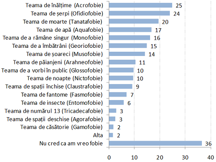

Magenta Consulting a efectuat acest studiu pentru a determina care sunt fobiile moldovenilor și în ce măsură acestea se manifestă. Datele au fost colectate prin intermediul sondajului trimestrial Magenta National Screening, pe un eșantion de 3000 de respondenți, în 132 de localități urbane și rurale (marja de eroare constituie ± 1,7%, la un interval de încredere de 95%). Fobia este o teamă irațională dusă uneori la extreme. Aceasta se poate declanșa atât în urma unei situații, cât și în cazul în care persoana doar se gândește la situația dată.
